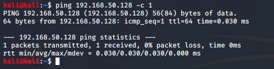

we ll build ping sweeper script
to ping only once:

stored it in a file named ip.txt using :
ping 192.168.50.128 -c 1 > ip.txt
if tried some other ping then u wouldnt recieve back a packet na

so u need to capture ip adrress from ip.txt

to take line containg this

to just have ip address

-d stands for delimiter (what we ll be cutting on)
here it is spaces
-f stands for what field we want back from the cut
(here field 4 we want na)
to remove the semicolon :

tr stands for translate
writing the script

/bash at the end for the bash script if python script so write pyhton

for loop is for variable ip in a sequence 1 to 254 we ll do something (here ping)
$1 is user input
so while running script type foll in kali
./ipsweep.sh 192.168.50
or rather hard code instead of $1 write 192.168.50
now this script has only read and write permission give it execute permission too
finally:

modified with if else;

so when error made:

now for say we wanna do an nmap scan on all of the ip lists at once:use for loop na

-sS means stealthscan
-p 80 means port 80
using T4

and then declare ip address using $ip